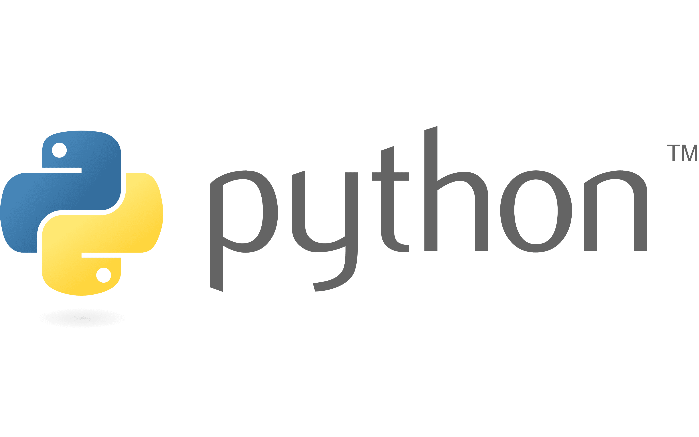
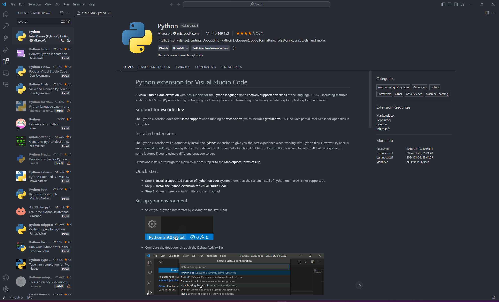

Introduction to Python Development Environment Setup Guide
Welcome to the Python Development Environment Setup Guide! This guide is structured as an mdBook, a modern approach to creating detailed documentation that is both accessible and easy to navigate. Our objective is to provide a comprehensive, user-friendly manual that simplifies the process of setting up a Python development environment for beginners.
Why This Guide is Essential
Python is a versatile and popular programming language, suitable for a range of applications from web development to data science. However, for newcomers, the initial setup of a Python development environment can be daunting. This guide demystifies the process, ensuring that even those with no prior programming experience can confidently take their first steps in Python.
What This Guide Covers
We delve into:
- Downloading and Installing Python: A straightforward walkthrough to get Python installed on your system.
- Setting Up Visual Studio Code (VSCode): Steps to install and configure VSCode, a powerful and user-friendly code editor, for Python development.
- Writing Your First Python Program: A simple tutorial to write and execute your first Python script, the classic "Hello World" program.
Designed for Beginners
Aligned with the principles outlined in our coursework, we've ensured that the guide is:
- Purposeful: Every section and graphic is included to serve a clear, instructional purpose.
- Simple and Clear: We've avoided technical jargon and complex explanations to keep the guide beginner-friendly.
- Well-Structured: Organized into distinct sections for easy navigation and comprehension.
- Complemented with Graphics: Screenshots and diagrams are included to visually aid the instructions, placed appropriately near the relevant text.
Collaborative Effort
This guide is the result of a collaborative effort, adhering to effective project management and teamwork strategies. We've divided the tasks equitably, ensuring regular communication and adapting our approach as needed for the best outcomes.
We hope this guide serves as a valuable resource for anyone embarking on their Python programming journey. Let's get started!
Feedback and Revisions
We value your feedback. Please let us know if there are areas we can improve or clarify. This guide is a living document and will evolve based on user input and further usability testing.

Downloading and Installing Python
Setting up Python on your computer is the first step in your programming journey. This section guides you through downloading Python from its official website and ensuring it's correctly installed on your system.
Visit the Python Website
- Navigate to Python's official website.
- Look for the download button for the latest Python version and click it. This ensures you have the most up-to-date features and security patches.
Installation Process
- Locate and open the downloaded Python installer file.
- Windows Users: A crucial step is to check the Add Python to PATH option before proceeding. This makes Python accessible from the command line.
- macOS/Linux Users: Follow the instructions presented by the installer. They typically involve a series of simple clicks.
Verifying Installation
- To ensure Python is correctly installed, open your system's command line interface:
- Windows: Use the Command Prompt or PowerShell.
- macOS/Linux: Use the Terminal application.
- Type
python --versionand press Enter. This command checks the installed Python version. - If the installation is successful, you'll see the Python version number displayed, like
Python 3.11.5.

Image Description: Screenshot showing the terminal window with the successful output of Python 3.11.5 after typing python --version.
Setting Up Visual Studio Code (VSCode) for Python Development
Visual Studio Code (VSCode) is a versatile and user-friendly code editor. In this section, we'll walk you through downloading VSCode and configuring it for Python development.
Downloading and Installing VSCode
- Visit the VSCode download page.
- Select the appropriate version for your operating system (Windows, macOS, or Linux) and download the installer.
- Run the downloaded file and follow the installation prompts.
Installing the Python Extension for VSCode
- Once VSCode is installed, launch it.
- To enhance VSCode for Python development, you'll need to install the Python extension. Click on the Extensions icon (or press
Ctrl+Shift+X/Cmd+Shift+X). - In the Extensions search bar, type "Python" and look for the Python extension by Microsoft.
- Click on the "Install" button to add this extension to VSCode.
Configuring VSCode for Python
- The Python extension automatically configures most settings for optimal Python development.
- If you wish to customize further, open the Command Palette (
Ctrl+Shift+P/Cmd+Shift+P) and explore Python-specific settings.

Image Description: Screenshot of the VSCode interface, showing the Extensions screen with the Python extension by Microsoft open and ready for installation.
Writing Your First Python Program in VSCode
Creating and running a Python program is an exciting first step in coding. In this section, you'll write and execute the classic "Hello World" program in Python using VSCode.
Creating a New Python File
- In VSCode, start a new file by selecting File > New File from the menu (or using the shortcut
Ctrl+N/Cmd+N). - Save this file with a
.pyextension, such ashello.py, indicating it's a Python script.
Writing the Hello World Program
-
In your new
hello.pyfile, enter the following Python code:print("Hello, World!") -
After typing the code, save your script (shortcut
Ctrl+S/Cmd+S).
Running the Program
- Open the integrated terminal in VSCode to run your script:
- Do this by selecting Terminal > New Terminal from the top menu.
- Alternatively, use the shortcut
Ctrl+` (Windows/Linux)orCmd+` (macOS).
- In the terminal, type
python hello.pyand press Enter. - If everything is set up correctly, you'll see "Hello, World!" printed in the terminal, signaling that your program has run successfully.

Image Description: Screenshot showing the VSCode window with the 'hello.py' file open, containing the 'print("Hello, World!")' code, and the integrated terminal displaying the output of the executed program.
Troubleshooting
Encountering issues is a normal part of the learning process. This section addresses common problems you might face while setting up your Python environment and how to resolve them.
- Python Not Found: If the terminal shows a 'Python not found' error after installation, confirm that Python was added to the PATH during installation. Reinstalling Python with the correct settings may be necessary.
- VSCode Not Recognizing Python: If VSCode does not recognize Python, try reinstalling the Python extension. Ensure that Python is properly installed on your system.
- Python File Not Running: If your
.pyfile isn't running, check that it's saved with the correct extension and that all changes are saved. Verify that you are running the script in the right directory in the terminal.
Remember, encountering and solving problems is an essential part of developing your problem-solving skills in programming!
Conclusion
Congratulations on successfully setting up your Python development environment in VSCode and writing your first Python program! These foundational skills are just the beginning of your programming journey.
This guide, designed as an mdBook, aims to provide a clear and user-friendly introduction to Python setup. By breaking down each step and complementing instructions with relevant graphics, we hope to make the learning process smoother and more engaging.
As you continue to explore Python and VSCode, remember that practice is key to mastering programming. Don't hesitate to refer back to this guide whenever you need a refresher on the basics.
Happy coding!